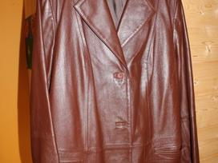

odinis švarkas - Musumažyliai
- ODINIS ŠVARKAS | ZARA Lietuva / Lithuania
Juodas Švarkelis S M L XL Pečiai 37cm 38cm 39cm 40cm Krutinė 86cm 90cm 96cm 102cm Rankovės ilgis 58cm 58cm 59cm 60cm Ilgis 58cm 58cm 60cm 60cm Eco oda Modelis dėvi dydi S Modelio ūgis: 165cm,svoris: 50kg - Odinis švarkas - Skelbiu.lt
Juodas odinis švarkas - nuostabaus dizaino švarkas, galima derinti su juodomis ar kitos spalvos kelnėmis ir sijonu. Švarkas turi kišenes. Puikus pasirinkimas norint atrodyti stilingai ir kartu dalykiškai - Odinės striukės vyrams - pirk internetu | ABOUT YOU
ODINIS ŠVARKAS Detalės . Taupe pilka - 3322/041. Švarkas apykakle su smailiais atvartais ir ilgomis rankovėmis. Priekinės kišenės su apvadais. Užsegamas kontrastingomis sagomis priekyje. MODELIO ŪGIS: 177 CM. Žiūrėti daugiau Žiūrėti mažiau. - Juodas odinis švarkas "AIRA"
Kombinezono tipo kostiumas ir odinis švarkas. „Šį sezoną veikiausiai visos turės bent vieną tokį kombinezoną, tad ir jį galima suderinti su odiniu švarku. Nesvarbu, ar tai bus ilgų, trumpintų ar šortų ilgio kelnės, visada gerai atrodys užsimetus odinį švarkelį. Kokius batus derinti, priklausys nuo kombinezono. - Švarkai vyrams internetu | Vyriški švarkai internetu ...
Kas gi geriau sustiprins solidaus ir savimi pasitikinčio vyro įspūdį, jei ne elegantiškas švarkas? „Style 24” vyriški švarkai gali puikiai derėti prie bet kokio stiliaus aprangos (tiek patogios laisvalaikio, tiek santūrios dalykinės). - 5 madingiausi odiniai švarkai ir stilistės pasiūlymai, su ...
Švarkai vyrams iš parduotuvės Stilano.lt , ar į darbą ar penktadienio susitikimui su draugais, stilingas švarkas tikrai pravers. Atrask mūsų stiliaus naujienas iš Ruduo 2020 kolekcijos, kur galėsi išsirinkti tau labiausiai tinkantį švarką bent kokiai progai ar kasdieniam pasivaikščiojimui. - Odinis švarkas - Žiūrėti viską - Kolekcija - Uterqüe Lithuania
ENTORNO DE PRUEBA / TEST ENVIRONMENT. Paskutinė savaitė Kolekcija Avalynė - Natūralios odos striukės, švarkeliai internetu | BRANDSALES.lt
Kaip išsimatuoti? 01 | KRŪTINĖ. Matuokite per iškiliausią krūtinės vietą. 02 | JUOSMUO. Matuokite aplink juosmenį. 03 | KLUBAI. Atsistoję ir suglaudę kojas matuokite aplink plačiausią klubų vietą. - Švarkai moterims | Švarkai moterims internetu | OTTO
Odinis švarkas "Sand" 53.40 EUR 89.00 EUR. Pilkas paltukas - švarkas su vilna 64.80 EUR 161.99 EUR. Originalus chaki švarkas 39.84 EUR 69.90 EUR. Nėriniuotas juodas švarkas 39.92 EUR 49.90 EUR. Ekstravagantiškas bordo švarkelis 39.53 EUR 59.90 EUR. Ilgas lengvas apsiaustas 38.69 EUR 44.99 EUR. - Kokybiški vyriški švarkai
odinis švarkas - Eco odos,rudeninis švarkas.išmatavimai:ilgis-50cm,tarp pažastų-42,5cm,rankovės-55cm.(yra defektas įplyšusi alkunė. lengvai pataisoma.)

Registruotis | Prisijungti Parduok dabar Parduok dabar Registruotis | Prisijungti Tavo „Mūsų mažylių“ gidas Kategorijos Apranga mergaitėms Apranga berniukams Žaislai, žaidimai Kūdikių ir vaikų priežiūra Vežimukai Judėjimo priemonės Kėdutės Baldai vaikams Knygos, mokyklos reikmenys Apranga nėštukėms Visa kita Sužinok daugiau Kaip tai veikia? Programėlė Pagalba Aktualu Apie įmonę Apie mus Reklama Nuostatai Saugumo politika Privatumo politika Taisyklės Slapukų politika Privatumas Slapukų nustatymai Bendruomenė Forumas Vaikiški Peržiūrėti visus Apranga mergaitėms Apranga berniukams Žaislai, žaidimai Kūdikių ir vaikų priežiūra Vežimukai Judėjimo priemonės Kėdutės Baldai vaikams Knygos, mokyklos reikmenys Apranga nėštukėms Visa kita Daugiau kategorijų Vinted Peržiūrėti visus Apranga mergaitėms Apranga berniukams Žaislai, žaidimai Kūdikių ir vaikų priežiūra Vežimukai Judėjimo priemonės Kėdutės Baldai vaikams Knygos, mokyklos reikmenys Apranga nėštukėms Visa kita Peržiūrėti visus Kūdikėliams Avalynė Lauko drabužiai Megztiniai, džemperiai Marškiniai, palaidinės Suknelės Sijonukai Kelnės ir šortai Rankinės, kuprinytės Aksesuarai Maudymosi apranga Apatiniai drabužiai Miego apranga Sportinė apranga Urmu Dvynukams, trynukams Karnavaliniai kostiumai Proginė apranga Kiti drabužiai Peržiūrėti visus Kūdikėliams Avalynė Lauko drabužiai Megztiniai, džemperiai Marškiniai, marškinėliai Kelnės ir šortai Kuprinytės, krepšeliai Aksesuarai Maudymosi apranga Apatiniai drabužiai Miego apranga Sportinė apranga Urmu Dvynukams, trynukams Karnavaliniai kostiumai Proginė apranga Kiti drabužiai Peržiūrėti visus Žaidimai Dėlionės Žaislai Žaidimų konsolės ir videožaidimai Peržiūrėti visus Priemonės miegui, tekstilė Priemonės maitinimui Kūdikių nešynės, vaikjuostės Priemonės maudynėms ir po jų Mažylio pervystymui, odelės priežiūrai Vaikų priežiūros technika Gultukai ir supynės Seilinukai Naktipuodžiai Apsaugos vaikams/ nuo vaikų Peržiūrėti visus Skėtuko formos Sportiniai Universalūs Dvynukams ir daugiau Vežimėlių, autokėdučių priedai Peržiūrėti visus Vaikštynės Stumdukai Paspirtukai Dviračio kėdutės, priekabos Triratukai, triračiai Dviratukai, balansiniai dviratukai, dviračiai Judėjimo priemonės laukui Rogės, snieglentės, slidės Žiemos pramogoms Riedučiai, pačiūžos Peržiūrėti visus Automobilio kėdutės Maitinimo kėdutės Peržiūrėti visus Lopšeliai Lovytės Lovos paaugusiems Čiužiniai Lavinamieji kilimėliai Maniežai Vystymo paviršiai Vaikų kambario baldai Peržiūrėti visus Vaikiškos knygutės Knygos tėvams Vadovėliai, pratybos Kuprinės Raštinės reikmenys Peržiūrėti visus Palaidinės, tunikos Suknelės, sarafanai Sijonai Kelnės Šortai, kapriai Kombinezonai Megztiniai Paltai, lietpalčiai, striukės Maudymosi kostiumėliai Apatinis trikotažas Sportinė apranga Peržiūrėti visus Apie mus Sužinok daugiau Kaip tai veikia? Programėlė Pagalba Aktualu Apie įmonę Apie mus Reklama Nuostatai Saugumo politika Privatumo politika Taisyklės Slapukų politika Privatumas Slapukų nustatymai Bendruomenė Forumas
Norėdamas toliau pirkti ir parduoti prekes vaikams, pereik į Vinted. „Mūsų Mažyliuose“ jau nebegalėsi pirkti kitų prekių.
Pagrindinis Vaikiški Apranga mergaitėms Lauko drabužiai Švarkai, švarkeliai 5,00 € Dydis 13 metų / 152-158 cm Būklė Patenkinama Spalva juoda Vieta Klaipėda, Lietuva Peržiūrėta 147 Įkeltaodinis švarkas
Eco odos,rudeninis švarkas.išmatavimai:ilgis-50cm,tarp pažastų-42,5cm,rankovės-55cm.(yra defektas įplyšusi alkunė. lengvai pataisoma.)
Nario skelbimai (86) modi du Trumpesnio modeliuko, turi daug elastano, labai minkšti ir smagūs. Pirkti iš kitos narės dukrai, bet nenešioja;(. Norėčiau tiek kiek ir m... 20,00 € 14 metų / 158-164 cm Pirkta čia MM išleistuvės bet neprireikė, tad parduodamas nuostabaus grožio proginę suknelė. Subtiliai turi blizgesio ir subtiliai papust... 18,00 € 12 metų / 146-152 cm H&M Av4jom tik per sventes. 35 dydis. 4,00 € 35 Zara Zara medvilninės, klasikinio modeliuko siaurėjančia apačia su skeltuku. Juosmenukas reguliojasi guma. Atrodo dailiai. 4,00 € 11 metų / 140-146 cm Zara bolero, blizgus sijonukas, blizgūs bateliai. Visas derinukas 10 eur. (pridėsiu blizgancias pėdkelnes) 9,00 € 10 metų / 134-140 cm Sisley Ir kasdienai ir pasipuošti. Juosmenukas ant gumos 5,00 € 10 metų / 134-140 cm GAP Stilinga, labai minkštutės odytės, su šikiniu pamušalu odinukė. Turi kelis defektukus kurie nešiojimui netrukdo ir sutvarkomi.(matosi foto) 9,00 € 11 metų / 140-146 cm modi du Lietuvių kūrėjos labai maloni prie kūno palaidinukė tunikytė. Nešiojom 9 metų. 134-140. išmatavimai: rankovė 46 cm nugaros ilgis 61 cm ... 8,00 € 10 metų / 134-140 cm Zara Zara blizgios minštos medžiagos, kailiukas nuo kapiušonu nusisega. Tinka paauglei arba mamytei. M dydis 10,00 € 14 metų / 158-164 cm Zara Daili, labai mažai nešiota. 9/10 met. labiau 9 met. 4,00 € 10 metų / 134-140 cm H&M blizgus mazas rankinukas 3,00 € F&F Pirktos UK, labai minkšto džinsiuko, 95 proc. medvilnė 2 proc. elastano. Dukrytė vos kelis kartus užsidėjo . Liemuo reguliuojasi guma, 33... 4,00 € 11 metų / 140-146 cm Graži, tinka ant apatinės maikutės oversize stiliaus. Tinka 158-170 4,00 € 15 metų / 164-170 cm Tommy Hilfiger miela, pirktra MM bet dėja dukrai per maža:( tinka 152-158. tarp pažastų 42, ilgis 48 cm 5,00 € 13 metų / 152-158 cm Labai minkštos bei graziös.liemuo 31, (reguliuojasi guma). Raso 122 6 met, bet tiko iki 134. graziai atropo ir atsilenkus ir kaip bridziu... 5,00 € 8 metai / 122-128 cm Zara balta maikutė su piešiniais 3,00 € 14 metų / 158-164 cm H&M pavasarinis/vasarinis rausvos spalvos švarkelis. 3,00 € 14 metų / 158-164 cm trumpi, vasariški džinsiniai šortukai su elastanu. liemuo 31, (reguliuojasi gum) klubai 34 cm. raso 152, bet tinka 134-140. arba pagal is... 2,00 € 10 metų / 134-140 cm Cropp mėlyni marškinukai 5,00 € 14 metų / 158-164 cm Timberland Rudeniniai/žieminiai odiniai batukai. Avėti nemažai, bet vis dar puikiai tinkami avėjimui kaip pakaitiniai batai. Fotografuota reali būkl... 5,00 € 33 Zara Zara, mažai dėvėta . Ilgis 45, tarp pažastų 37, gerai tamposi. 3,00 € 13 metų / 152-158 cm Zara Daili, ilgis 49 cm. poleis tarp pazastu 41, rankovė 58 4,00 € 10 metų / 134-140 cm Zara zar amegstukas, vietomis pasitrauke siuliukai, bet ladangi jis stambaus mezgimo nekrenta i akis Ilgis 57 cm. plotis tarp pazastu 41 , ra... 3,00 € 13 metų / 152-158 cm Zara liemuo 28, ilgis 34 . Zara palaidinuke dovanu perkanciai:)raso 152, labiau 140-146 4,00 € 11 metų / 140-146 cm Peržiūrėti visus nario skelbimus (86) Panašūs skelbimai 158cm arba mamytei XS 12,00 € 13 metų / 152-158 cm Užsidėtas max 3kart dar tikrai galima dėvėti. Išmatavimai: per krūtinę 44cm ilgis 59cm 5,00 € 13 metų / 152-158 cm puikios būklės. visiškai nedevėtas. (8 to go) (12-13-14 metu) 6,00 € 13 metų / 152-158 cm Naujas švarkelis 10,00 € 13 metų / 152-158 cm Parduodu gražų džinsinį švarkelį 5,00 € 13 metų / 152-158 cm Dėvėtas,puikios būklės. 1,50 € 13 metų / 152-158 cm mazai devetas 7,00 € 13 metų / 152-158 cm Mazai nesiota geros bukles 5,00 € 13 metų / 152-158 cm Svarkas 7,00 € 13 metų / 152-158 cm S dydis 6,00 € 13 metų / 152-158 cm Fainutis , mielas, geras svarkelis 18,00 € 13 metų / 152-158 cm be defektų 3,50 € 13 metų / 152-158 cm Puikios būklės švarkas,158 dydis,dėvėtas mažai. 12,00 € 13 metų / 152-158 cm Tamsiai melynas svarkas! Tinka mokyklai, tik reikia pasikeisti mokyklos emblema. 158 cm ugiui. 10,00 € 13 metų / 152-158 cm Devėtas. 4,00 € 13 metų / 152-158 cm #džinsinissvarkelis #melynas, ilgis 40 cm, tarp petukų 37 cm, rankovė nuo pažastuko 42 cm. 15,00 € 13 metų / 152-158 cm Dydis nurodytas XXS, ilgis iš priekiuko 43 cm, nugarytė trumpesnė, tarp pazastukų 38 cm, rankovytė 59/47 cm. 4,00 € 13 metų / 152-158 cm Dydis nurodytas XS, Ilgis 51 cm, tarp pazastukų 41 cm, rankovytė 58/47 cm 4,00 € 13 metų / 152-158 cm Mazai nesioti 3,00 € 13 metų / 152-158 cm Su kapišonu 4,00 € 13 metų / 152-158 cm Baltas švarkelis pusilgėm rankovem iki liemesn 4,00 € 13 metų / 152-158 cm puikiai tiks mokyklai. Spalva- juoda. Ismatavimus klauskite;) 5,00 € 13 metų / 152-158 cm Rašo 152 cm. Labai gražus 8,00 € 13 metų / 152-158 cm Prailginto tipo, šiek tiek plėšytas minkšto džinso švarkelis. Jokių defektų. Išmatavimai:tarp pažastų 46cm; rankovės ilgis 56cm. Švarkeli... 15,00 € 13 metų / 152-158 cmNariai taip pat ieškojo
Juoda Švarkai, švarkeliai , Švarkai, švarkeliai



Mauris vulputate dolor
Rutrum fermentum nibh in augue praesent urna congue rutrum.
Etiam posuere